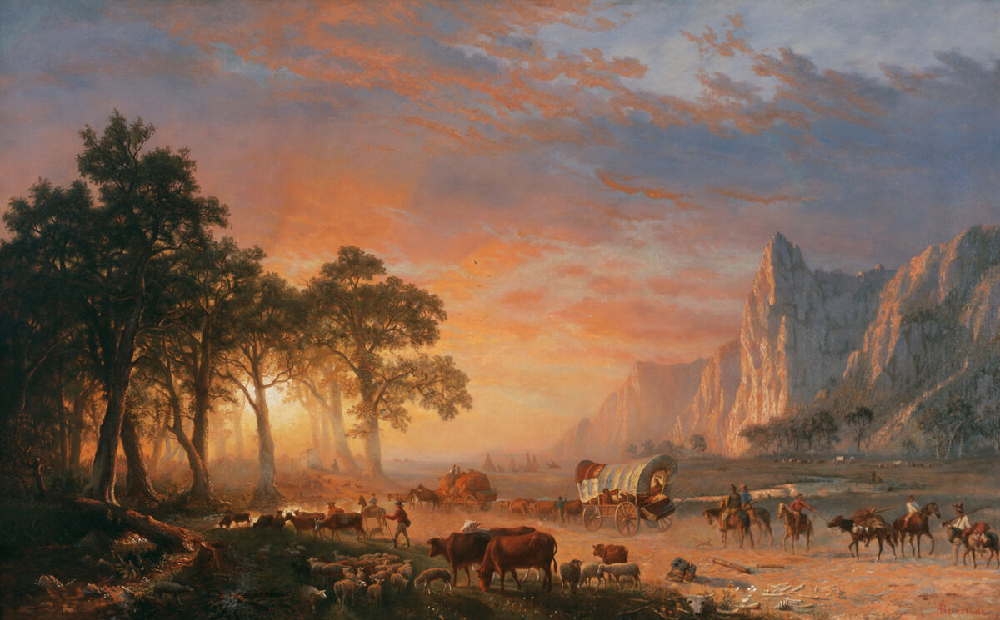
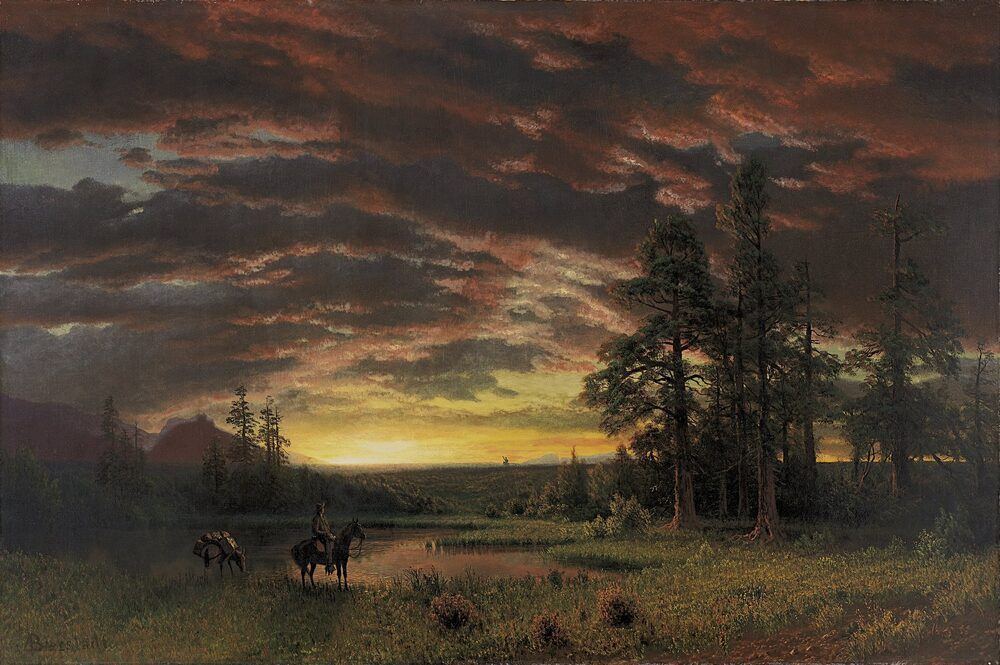

A2 · American History
The Oregon Trail
Three thousand kilometers on foot, four months of dust, and the illness that killed more people than anything else.
Play the audio and follow along, then read it again on your own. Tap or hover over a highlighted word to see what it means.
In April, when the grass was finally high enough for the animals to eat, the wagons left Missouri and started west.
Between the 1840s and the 1860s, about four hundred thousand people walked across North America to Oregon, California and Utah. The road they used is called the Oregon Trail.
It was about three thousand two hundred kilometers long, and it took four to six months. Most people did not ride in the wagon. They walked next to it, because the wagon was full of food and tools.

Families usually traveled with oxen, not horses. Oxen were slower, but they were stronger, they ate the grass along the road, and they did not cost as much.
A normal day started at four in the morning. The group traveled about twenty-five kilometers, stopped at midday for the animals, and camped in a circle in the evening.
People went west for different reasons. Some wanted good farming land, which was free if you built a house and stayed. Some were running away from debt. After 1848, many were going to the gold.
Films show attacks by Native American nations, and this is mostly wrong. Attacks were rare. In the early years, Native people more often sold food to the travelers or helped them cross rivers.
The real danger was disease, especially cholera, which came from dirty water in the camps. A person could be healthy in the morning and dead the same night. Accidents with wagons, guns and rivers killed many others.
Perhaps one person in ten died on the trail. There are graves all along it, and the names on many of them are children's names.

The railroad arrived in 1869, and the long walk stopped being necessary. In some places in Wyoming you can still see the lines in the rock, cut by the wheels of the wagons.
Key Vocabulary
- a trail a long path or route across country
- an ox a strong farm animal used to pull wagons (plural: oxen)
- to camp to sleep outside, in a tent or next to a wagon
- debt money that you owe to somebody
- rare not happening often
- cholera a serious disease that comes from dirty water
- an accident something bad that happens without a plan
- a grave the place in the ground where a dead person is buried
- a railroad the road of metal lines that trains run on (British: railway)
The Oregon Trail — A2 · American History · Renan the Teacher, English Language Academy · https://renangrossi.github.io/englishclasses/reading/a2/oregon-trail.html
Interactive Exercises
Practice
Complete each exercise, then click Submit to see your score and an explanation for every answer.
Speaking & Writing
Discussion
There are no right answers here — use these to practice speaking, or write a short answer to each.
- The families could take very little with them. What three things would you take?
- People went west for land, for money, or to escape a problem. Which reason do you understand best?
- Films often show the trail in a way that is not true. Can you think of another part of history that films get wrong?